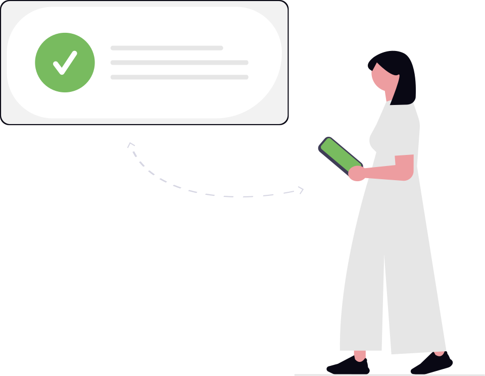

I'm an aspiring frontend software engineer that loves to create. I am currently building my skills in HTML, CSS, and JavaScript through Frontend Simplified. I enjoy creating clean, responsive, and user-friendly websites while continuously learning new practices. This portfolio showcases my progress and the projects I've completed as I grow into a confident front-end developer.
